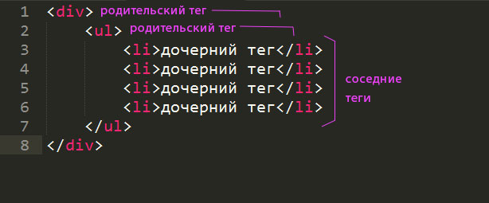
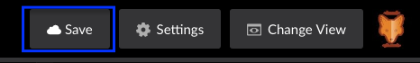

Верстаем интерактивное слайд-ин меню
 Татьяна Тен Webcoalition
Татьяна Тен Webcoalition
Татьяна Тен, Webcoalition
Татьяна Тен Webcoalition
frontend-разработчик в Webcoalition

HyperText Markup Language — «язык гипертекстовой разметки».
Cтандартизированный язык разметки документов во Всемирной паутине.
< и >.Чтобы сообщить браузеру дополнительную информацию о содержимом тегов или задать специальные свойства используются атрибуты.
".=Можно указать в любом теге:
id — позволяет задать тегу универсальный идентификатор, чтобы в дальнейшем ссылаться на него.class — позволяет задать один или несколько через пробел определенных пользователем классов для дальнейшего управления внешним видом элемента через стили.У некоторых тегов могут быть особенные атрибуты, например у input (поле ввода) есть атрибут type, с помощью которого поле ввода может превращаться в чекбокс.
Теги могут быть вовлечены в различные отношения: например, если теги вложены в один и тот же тег и идут друг за другом, то такие теги называются соседями.
При этом соседи которые следую раньше — предшественники. А позже — последователи. Ближайший предшественник — предыдущий тег. Ближайший последователь — следующий.

CSS — Cascading Style Sheets — каскадные таблицы стилей.
это язык, содержащий набор информации, отвечающий за то, как именно будет отображаться страница сайта визуально: используя css, мы можем запрограммировать внешний вид страницы: оформление и расположение блоков и элементов. СSS поддерживается абсолютно всеми браузерами, и благодаря свой простоте, де-факто HTML+CSS стали стандартом для построения веб-интерфейсов.
p {
color: red;
}
В терминах CSS это - правило
Его составные части:
p) - указание к каким тегам применяются указанные в правиле стилиdiv, p, h1, h2 и т.д.Чтобы обращаться к тегу по имени класса, нужно записать это имя с точкой перед началом:
.имя-класса {
свойство : значение;
}
Пример:
.main-header {
font-size: 50px;
}
(важно: имя класса в css стилях должно в точности совпадать с именем атрибута класса, записаного в разметке, например
и .main-header не будут совпадать, наше правило не сработает).
Все, что относится к внешнему виду, положению и представлению на экране(ширина, высота, позиция, способ расположения по отношению к соседним тегам, цвет, фон и многое другое).
С распространением мобильных устройств в верстке появился новый прием – меню стали прятать за иконкой «бургера»
Со временем этот паттерн перекочевал и в десктопные версии сайтов.

Многие начинающие верстальщики отказываются от выезжающего меню, поскольку думают, что для реализации требуется знание JavaScript.
Но это не так! Сегодня мы научимся верстать «бургер-меню» на чистом HTML и CSS.
Открываем онлайн редактор Code Pen и нажимаем кнопку New pen в верхней части страницы.
Слева, в окне с названием HTML мы будем писать нашу разметку. В окне с названием CSS мы будем писать стили.
Результат будет виден сразу в нижней части страницы.
После очередных изменений не забывайте нажимать кнопку Save.

В онлайн-редакторе, с которым мы работаем сегодня, не нужно писать обязательные для HTML-страницы теги <!DOCTYPE html>, <html> и <head>.
Мы можем сразу начать писать разметку, которая должна быть расположена внутри тега <body>.
Если вы работаете в обычном редакторе, то не забудьте про обязательную разметку HTML-страницы.
Начнем с того, что создадим родительский блок, внутри которого будет располагаться вся наша страница.
Сделаем это при помощи обычного <div> и зададим этому тегу класс wrapper.
<div class="wrapper">
</div>
До появления тега nav меню на сайтах было принято использовать ненумерованный список (ul) и в каждый пункт меню (li) вкладывать ссылки (a).
Код получался перегруженным. Посмотрите на эту разметку:
<div class="wrapper">
<ul>
<li><a href="">Главная</a></li>
<li><a href="">Статьи</a></li>
<li><a href="">Новости</a></li>
<li><a href="">Контакты</a></li>
</ul>
</div>
В спецификации HTML5 появился специальный тег nav при помощи которого мы можем создавать навигацию по нашему сайту. Меню как раз являетс навигацией.
Добавим в нашу разметку nav и вложим в него несколько ссылок для пунктов меню:
<div class="wrapper">
<nav>
<a href="">Главная</a>
<a href="">Статьи</a>
<a href="">Новости</a>
<a href="">Контакты</a>
</nav>
</div>
mainВесь контент нашей страницы будет расположен внутри тега main.
<div class="wrapper">
<nav>
<a href="">Главная</a>
<a href="">Статьи</a>
<a href="">Новости</a>
<a href="">Контакты</a>
</nav>
<main>
</main>
</div>
Сейчас контент нам не особенно важен, поэтому мы просто добавим заголовок и абзац текста, используя для этого теги h1 и p:
<main>
<h1>Контент</h1>
<p>Некий текст.</p>
</main>
Для начала зададим основные стили странице. Без них совсем никуда.
* {
box-sizing: border-box;
}
html, body {
height: 100%;
font-family: sans-serif;
}
body {
margin: 0;
}
В этих стилях мы «говорим», что все элементы на странице будут рассчитывать свои размеры исходя из алгоритма border-box.
Дальше мы задаем всей странице высоту в 100% экрана. Таким образом страница займет все видимое пространство по высоте.
На всей станице у нас будет использовать шрифт «без засечек». Для этого мы указываем в свойстве font-family значение sans-serif.
В последнем правиле мы сбрасываем стандартный отступ в 8px для элемента body.
Перейдем к отдельным блокам нашей страницы. Расположим меню слева от контента. На то место, где он будет появляться после нажатия на «бургер». И зададим ему цветной фон, чтобы визуально отделить от основного контента:
nav {
background: #FFCC99;
padding: 20px;
width: 320px;
}
Теперь расположим ссылки друг под другом и поменяем стили текста:
nav a {
display: block;
color: black;
text-decoration: none;
padding: 10px 0;
}
Много времени контенту мы уделять не будем. Зададим отступы так, чтобы блоки не слипались между собой:
main {
padding: 20px;
}
Чтобы меню было приклеено к левому краю страницы, укажем блоку nav position: fixed. Теперь положение меню вычисляется относительно экрана браузера. Укажем также координаты верхнего левого края top: 0 и left: 0, не забудем указать height: 100% для того, чтобы меню занимало всю доступную высоту экрана по вертикали:
nav {
height: 100%;
position: fixed;
left: 0;
top: 0;
}
В CSS у нас есть несколько значений для свойства position.
absolute |
Абсолютное позиционирование. Элемент исключается из потока документа и занимает позицию относительно окна браузера или относительно краев родителя с position: relative. |
fixed |
Фиксированное позиционирование. Привязывается к координатам, указанным при помощи left / right / top / bottom и не меняет своего положения даже при прокрутке страницы. |
relative |
Относительное позиционирование. Положение элемента отсчитывается от текущей позиции в потоке документа. |
static |
Статичное позиционирование. Элемент не меняет своего положения. Значение по умолчанию. |
Поскольку элементы с любым значением свойства position кроме static исключаются из потока документа и не видят своей позиции, мы не можем управлять его положением при помощи обычных свойств. Для перемещения спозиционированных элементов используются свойства left (от левого края),
right (от правого края),
top (сверху),
bottom (снизу).
Теперь поработаем над контентом: после манипуляций с нашим меню мы видим, что часть контента у нас невидима, так как попала под наше меню. Исправляем эту ситуацию так: зададим блоку main отступ слева, равный ширине нашего меню:
main {
margin-left: 320px;
}

Теперь займемся кнопкой, которая будет управлять нашим меню. По клику на нее наше меню будет выезжать и уезжать обратно.
Добавим в нашу HTML-разметку новые элементы. Это обязательная составляющая магии.
Добавим чекбокс:
<input type="checkbox" id="navigation">
label для inputТеперь ниже добавим label и свяжем его с нашим чекбоксом при помощи атрибута for и имени идентификатора:
<input type="checkbox" id="navigation">
<label for="navigation"></label>
Спрячем меню за пределы экрана где оно будет находится до тех пор, пока мы не нажмем на кнопку:
nav {
margin: 0 0 0 -320px;
}
Для нашей будущей кнопки зададим стили так, чтобы она была видна всегда:
input {
position: fixed;
top: 5px;
left: 330px;
}
А теперь волшебное правило. При нажатом чекбоксе значение свойства margin у меню меняется на 0 и мы можем его видеть:
input:checked ~ nav{
margin: 0;
}
:checkedВ последнем правиле мы использовали псевдокласс :checked. Он отвечает за состояние, когда чекбокс нажат. Псевдокласс помогает выбрать нам некий элемент по его состоянию. Еще одним, наверняка известным вам, псевдоклассом является :hover – состояние элемента при наведении курсора. Его мы тоже позже используем.
~Помимо этого в нашем селекторе есть загадочный знак ~. Он является частью составного селектора и ищет следующие теги, находящиеся после тега из первой части селектора - input:checked.
Таким образом наш селектор можно расшифровать так: «Выбираем элемент nav, который находится после "выбранного" чекбокса.»
С меню мы разобрались, а вот контент никак не реагирует на скрытие/появление меню. Давайте добавим эту «реакцию».
Однако, можно заметить, что метод с margin для контента не подойдет – мы же не хотим, чтобы ширина контента менялась? Чтобы сдвигать контент и при этом сохранять его ширину неизменной (именно сдвигать, а не сужать) – мы воспользуемся css трансформацией:
input:checked ~ main {
transform: translate3d(320px, 0, 0);
}
Возможности современного CSS позволяют нам производить с элементами всяческие трансформации:
translate |
перемещает элемент вдоль трёх осей (х, у и z) |
rotate |
вращает элемент вокруг центральной точки |
scale |
изменяет размер элемента |
skew |
искажает элемент |
Немного поменяем стили нашей кнопки и заставим ее двигаться вместе с меню:
input {
position: fixed;
top: 5px;
left: 10px;
z-index: 10;
}
input:checked{
left: 330px;
}
Мы с каждым шагам все ближе к конечной верстке нашего выезжающего меню, но сейчас нам предстоит решить проблему с горизонтальным скроллом, который появляется при открытом меню.
Здесь нас выручит наш блок .wrapper: чтобы предотвратить появление горизонтальной прокрутки на странице, зададим этому блоку свойство overflow: hidden, это позволит нам «скрывать» все лишнее:
.wrapper {
overflow: hidden;
}
label!Сделаем чекбокс невидимым, передав всю власть элементу label:
input {
display: none;
}
label {
position: fixed;
top: 5px;
left: 10px;
z-index: 10;
width: 32px;
height: 32px;
padding: 5px 0;
}
Мы связали наш чекбокс с ярлыком label при помощи идентификатора, и при клике на ярлык чекбокс будет менять свое состояние.
Давайте сделаем кнопку более похожей на «бургер». На фон поместим иконку с «бургером»:
label {
background: url(https://goo.gl/MU28uI) no-repeat
center / cover;
}
input:checked ~ label{
left: 330px;
}
Так-то лучше! Теперь при нажатии на label наше меню реагирует и появляется или исчезает.
Теперь у нас все работает. Но современные технологии способны на большее. Давайте добавим плавности нашим трансформациям. Для этого нам потребуется свойство transition. Мы добавим его всем элементам, которые двигаются:
nav {
transition: margin-left 400ms ease-in;
}
main {
transition: transform 400ms ease-in;
}
label {
transition: left 400ms ease-in;
}
transitionШорткатом называют короткое свойство, объединяющее несколько значений.
transition: [ none | 'transition-property' ] || 'transition-duration' ||
'transition-timing-function' || 'transition-delay'
В нашем случае мы будем изменять значения свойств
transition-property, transition-duration и
transition-timing-function, перечисляя нужные значения по порядку через пробел.
И еще немного красоты: добавим реакцию пунктам меню на наведение курсора мыши. Сделаем это при помощи уже упомянутого псевдокласса :hover:
nav a:hover {
color: red;
transition: color 200ms;
}
Наша работа окончена! Теперь вы сможете сверстать такое же меню на любом сайте. Меняйте стили, время трансформации, добавляйте свою магию и не бойтесь экспериментировать.
Посмотреть финальный вариант на Code Pen

Дополнительно мы можем добавить кроссбраузерности. Под кроссбраузерностью следует понимать одинаковую работу и внешний вид во всех нужных нам браузерах. Для этого нам нужно будет познакомиться с понятием вендорный префикс.
С помощью вендорных префиксов браузеры, которые еще не в полной мере поддерживают то или иное свойство могут делать то, что нам нужно.
Проверить, какие свойства поддерживаются, а какие нет можно на сайте Can I use. К тому же в большинстве текстовых редакторов можно установить специальный плагин Автопрефиксер, который за вас будет проверять свойства и расставлять префиксы там, где это требуется. Но пока мы сделаем это руками.
-webkit-Вендорный префикс -webkit- нужен для того, чтобы наша верстка отлично работала в браузерах на основе Хромиума (Хром, Опера, Яндекс.Браузер). Все остальные браузеры отлично понимают все написанные нами стили:
nav {
-webkit-transition: margin-left 400ms ease-in;
transition: margin-left 400ms ease-in;
}
main {
-webkit-transition: -webkit-transform 400ms ease-in;
transition: -webkit-transform 400ms ease-in;
transition: transform 400ms ease-in;
transition: transform 400ms ease-in, -webkit-transform 400ms ease-in;
}
-webkit-. Продолжение
nav a:hover {
-webkit-transition: color 200ms;
transition: color 200ms;
}
label {
-webkit-transition: left 400ms ease-in;
transition: left 400ms ease-in;
}
input:checked ~ main {
-webkit-transform: translate3d(320px, 0, 0);
transform: translate3d(320px, 0, 0);
}
Ждем вас на программе
HTML-верстка: с нуля до первого макета